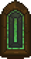

Stained glass window
| Stained glass window | |
|---|---|
 | |
Basic information
| |
Required Technology :
|
Illumination of Faith |
Related pages :
|
Church |
Building Information
| |
Horizontal x Vertical :
|
3x2 |
Rotatable :
|
No |
Location(s)
| |
| Church | |

The stained glass window provides 5 . You can only build it in a Cathedral. There's only one place available for it so far (version 1.206) which can be occupied by a Wall candelabra III. It can not be deconstructed once placed (version 1.206).
. You can only build it in a Cathedral. There's only one place available for it so far (version 1.206) which can be occupied by a Wall candelabra III. It can not be deconstructed once placed (version 1.206).
Cost
| Icon | Materials Required | Energy | Notes |
|---|---|---|---|

|
4× Glass 5× Complex iron parts 2× Gold jewelry details |
0 |
Requires Illumination of Faith |
| ||||||||